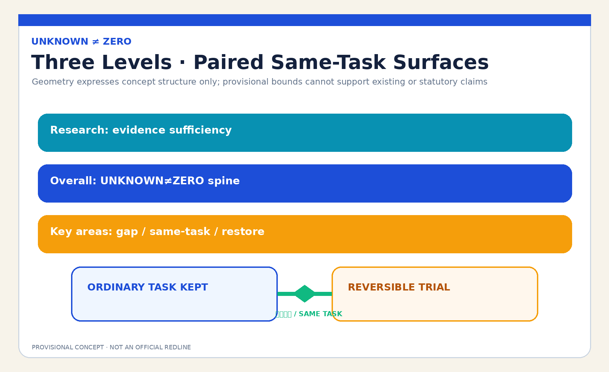

Ordinary-Task Reserve
No scan, booking, purchase, or tracking. Passage, rest, waiting, and staffed service remain equivalent.
No digital trace does not mean no public use.
Three-level scope · key areas · land-use zones · mobility · blue-green public space · buildings · renewal projects · AI scenarios

No scan, booking, purchase, or tracking. Passage, rest, waiting, and staffed service remain equivalent.
Movable furniture, temporary shelter, offline prompts, and physical shutdown only; restore on task degradation.
site_area_sqm · provisional recalculation
green_ratio · provisional recalculation
public_space_ratio · provisional recalculation
AI scenario cards
entry gates
observation coverage
task equivalence
agent.1–agent.6, 12 AI scenario cards, 6 personas, 4 professional tests, and 3 removable landmarks.
All four gates must pass; package_state is not a review decision.
sources.json · data/source_registry.json · standards/references/
A-CONTROLS-001 · A-SITE-001 · A-OBSERVATION-001 · A-EQUIVALENCE-001